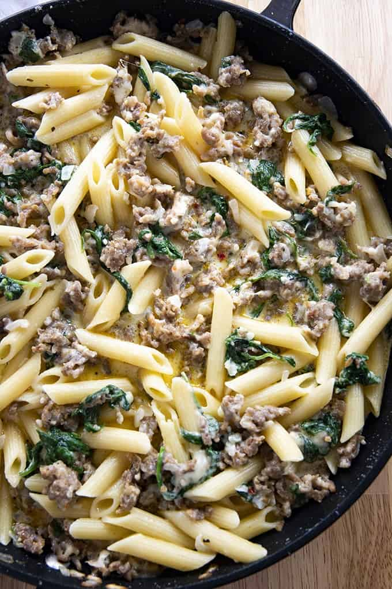

Creamy Italian Sausage Pasta

Description
This simple but flavorful meal comes together in less than 30 minutes! Whether
you are feeding the family, or just meal-prepping for the week, you'll be surprised
at just how delicious this recipe is. Seriously, something so tasty should not be
so simple to make!
Ingredients
- 1 Pound Ground Italian Sausage
- 1 Pound Penne Pasta
- 1 Tablespoon Olive Oil
- ½ Yellow Onion (minced)
- 2 Cloves Garlis (minced)
- ½ Teaspoon Red Pepper Flakes
- ½ Teaspoon Salt
- 2 Cups Heavy Cream
- 5 Ounces Baby Spinach
- 1 Cup Shredded Parmesan Cheese
Steps
- Cook the penne pasta in a large pot of boiling water according to the package directions.
- While the pasta is cooking, heat the olice oil in a large skillet over medium-high heat.
- Cook the Italian sausage along with the onion, garlic, red pepper flakes, and salt until the sausage is no longer pink.
- Drain excess fat from the skillet if necessary and return the meat mixture to the pan.
- turn the heat to low and add the cream to the skillet. Bring to a simmer and add in the spinach.
- Cook, stirring for about 3 minutes until the spinach is wilted.
- Stir in the parmesan cheese until melted. Stir the pasta into the sauce.
- Serve immediately.